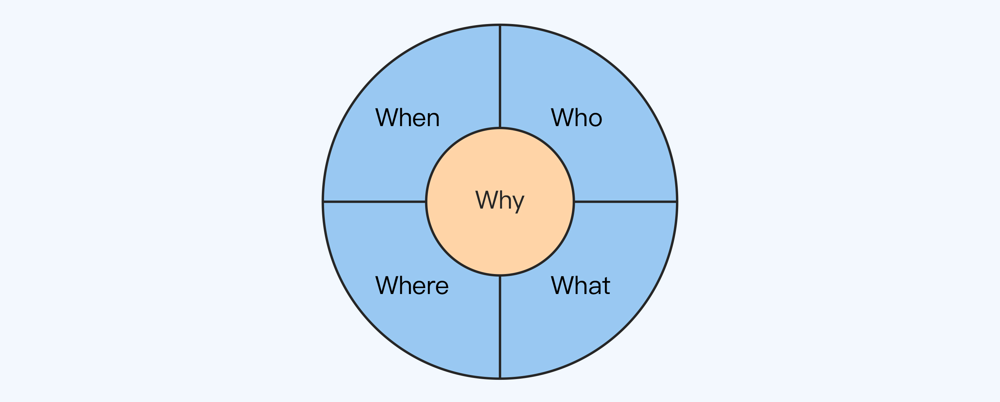

32 | 5W1H8C1D分析法：P5/P6怎么理解业务功能？
你好，我是华仔。
对于P5/P6级别来说，业务方面的要求主要是理解业务功能。如果你想要快速地入门业务功能，建议使用我总结的5W1H8C1D分析法。
这个名字看起来很长，其实它是由4个部分组成的：5W + 1H + 8C + 1D，实际操作的时候并不难。
1932年，美国政治学家拉斯维尔提出了一个5W分析法。后来，人们在它基础上补充了1H（How），形成了5W1H分析法，这个方法在企业管理、日常工作和学习提升中得到的广泛应用。
我根据自己多年的实践摸索，在5W和1H的基础进一步补充了8C和1D，从而形成了5W1H8C1D分析法，它是指用5W1H+8C的思路来分析和理解业务功能，并且在功能上线后熟悉运行数据（1D）。
对于P5/P6级别的技术人员来说，这就已经能够基本满足业务开发和晋升的要求了。
这一讲，我会针对5W、1H、8C和1D这4个部分逐一讲解。
5W
我们先来看5W。不知道你还记不记得，在第26讲，我介绍一个5W根因分析法，通过5个Why来挖掘根本原因。
不过这里的5W指的是5个不同的英文单词：When（何时）、Where（何地）、Who（何人）、What（何事）、Why（何因），代表需求产生的背景和功能上线后的运行环境，类似于操作系统上下文（Context）的概念。
为什么要特别关注需求的背景呢？有两个重要的原因：
首先，客户需求背后的真正问题才是关键。
客户遇到问题之后，往往会基于自己的经验、理解和学识等给出一个解决方案，然后说这是他们的需求。
理想情况是客户非常在行，最好就是软件分析师出身的，能够清晰地分析问题并提出合理的解决方案作为需求。
但现实情况却往往不妙，很多客户对软件的理解可能仅仅停留在Windows或者微信上，甚至有些客户认为你会变魔法，只要他说一个“简单的”需求，你就能变出他想要的！
所以，如果我们不主动挖掘需求背后的5W，就算完美地实现了客户的需求，也可能没有真正解决客户的问题。
其次，理解需求背景有助于设计更好的方案。
需求背景会隐含很多需求相关的信息，而这些信息会影响我们的方案设计。
举个很简单的例子，同样是垃圾桶，放在巴西贫民窟的要求和放在纽约帝国大厦的肯定不一样。
贫民窟可能有很多玩耍的小孩，将垃圾桶作为足球的射门目标，这样对垃圾桶的牢固性要求很高，对美观性就没什么要求了。
而在帝国大厦上班的大多是西装革履的白领金领，对美观性有比较高的要求，但对牢固性就没什么特别的要求了，毕竟不会经常有人去踢垃圾桶。
那么，这5个W分别是怎么回事儿呢？我一个一个地来讲吧。
第一个W是When，代表和时间相关的信息，常见的有：
- 季节信息：春夏秋冬等。
- 日期信息：节日、假日等。
- 作息时间：白天、晚上、凌晨、早晨、上午、下午、晚上、深夜等。
比如我在某通信巨头公司做设备的时候，如果是做数据倒换工具，都要求设计得非常智能，最好是一键式操作。
为什么呢？因为数据倒换都是在晚上凌晨2～4点进行，这时操作人员最困、思维最迟钝的时候，如果你做的数据倒换工具需要操作七七四十九大步，九九八十一小步，并且只要一步出错就全部重来，那么谁还敢去操作？
第2个W是Where，代表和地点相关的信息，常见的有：
- 国家、地区：不同的国家和地区有不同的文化、风俗、制度等。
- 室内、室外、街道。
- 建筑物。
- 交通工具，比如上下班做地铁，开车等。
比如我们的这门课程包括包括图文和音频，图文适合在不那么拥挤的地铁上看，但是如果你开车的话，就只能听音频。
第3个W是Who，代表和参与者相关的信息。
注意，我这里说的是“参与者”，而不是“人”。为什么呢？因为很多外部参与者不一定是人，外部系统和动物这些都可以算参与者。常见的参与者信息有：
- 投资者、管理者。
- 使用者、维护者。
- 监督者、评估者：包括政府机构、监管机构等。
- 交互者：与当前系统交互的其他系统。
比如对于银行的ATM机，参与者有以下这4类：
- 顾客：使用ATM机器取款、存款。
- 银行维护人员：每天将钱放进ATM机器。
- 质检机构：根据XX法律对ATM机进行检查。
- 银行IT系统：ATM机需要与银行的IT系统交互。
第4个W是What，代表客户想要的输出结果，比如一个文档、一份报告、一个图片、一个系统和一个产品等。一般情况下，这也是我们看到的最原始的需求。
第5个W是Why，代表客户遇到的问题。
问题是客户提出需求的驱动力，只要是客户觉得不爽的地方都属于问题的范围。
在这5个W中，Why是最关键的，因为只有真正了解了客户提出需求的驱动力，才能真正解决客户的问题，而只有真正解决了客户的问题，那么客户才会真正满意。这也是为什么在晋升答辩的时候，评委问的最多的就是Why，比如“为什么要做这个需求？”“这个功能解决了什么问题？”
下面这张图形象地描绘了5W之间的关系：

1H
H代表How，也就是如何，它和5W共同组成了5W1H分析法，又叫六何分析法。
在分析和理解业务的时候，How不是指设计方案，而是指业务需求的处理逻辑。
需求有简单和复杂之分。有的需求可能很简单，客户想要的东西很明确，一两句话就能够说清楚；但绝大部分需求都没有这么简单，一般会涉及到多个步骤、多次交互和多个状态变化等，这种情况就要把需求的处理逻辑描述清楚。
比如取款就是一个需求，但它包含多次交互，要插卡、输入密码、输入金额、打印账单、取钱这一系列步骤，How就是用来描述这整个流程是怎么运行的。
8C
5W1H关注的是需求的功能属性，而8C关注的是需求的质量属性。需求最终是不是真正以合理地方式实现了，既要看功能属性是否满足需求，也要看质量属性是否符合要求，两者缺一不可！
所以我们还需要加一些约束条件（Constraint），也就是我所说的C。这个约束条件怎么理解呢？
不知道你还记不记得，我在第23讲中提到过，OKR中有时需要添加有些辅助指标，比如光说“新增用户数 2000 万”可能还不够，还得加上“投入资金不超过 1 亿”和“新用户月留存率不低于 40%”。
因为如果疯狂通过红包刺激提升新增用户数，一来花钱太多，二来吸引的大部分是羊毛党，很难转化为忠实用户，这显然不是我们真正想要的。
其实约束条件就相当于这些辅助指标，它们的作用是一样的。
对于业务需求，我总结了8个C：
- 性能（Performance）
性能是指系统提供相应服务的效率，一般包括响应时间和吞吐量，是很多系统架构设计的关键约束条件之一。
比如同样是提供信息给用户浏览的Web网站，一个日访问量1万，一个日访问量10亿，它们的设计是完全不一样的。
- 成本（Cost）
成本是指为了实现系统而需要付出的代价，也是很多系统架构设计的关键约束之一。
比如客户只愿意出100万来买这个系统，最后我们却设计了一个耗费1000万的系统，要么客户不愿买，要么我们自己亏损降价。无论哪种结果，最后都是我们赔本。
- 时间（Time）
时间是指客户要求的交付时间，它会影响项目的进度安排，从而会影响项目的设计方案。
比如一个项目的交付时间很紧，那么系统设计可能就不能太复杂或者太庞大。
- 技术（Technology）
技术是指客户指定的技术。
比如客户现在用的都是Windows的机器，那么就可能要求我们基于Windows平台开发。
- 可靠性（Reliability）
可靠性是指系统长时间正确运行的能力。
比如出于法律法规或行业统一标准，银行、证券和电信这些公司对宕机时间有严格的要求。
- 安全性（Security）
安全性是指对信息安全的保护能力。
比如涉及到钱、身份证号和社会保险号等隐私信息的需求，在这方面的要求很高。
- 合规性（Compliance）
合规性是指满足各种行业标准、法律法规、规范等，比如3C、SOX、3GPP、ITUT等。
尤其是对于金融类相关的业务来说，政府监管要求和法规要求是非常严格的。
- 兼容性（Compatibility）
兼容性是指我们提供给客户的系统与客户其它已有的系统兼容的能力。
这个约束主要在2B领域比较常见。特别是在大企业、大公司中，多个系统都是互相交互、互相配合的。新的系统必须能够和已有的系统配合，否则将无法运行。
1D
D代表Data，也就是数据，反映了业务上线之后的效果（Result）。
我之所以不用结果对应的单词Result，而要用Data，是因为说到效果，很多技术人员的思考都很简单，只有超出预期、符合预期、不达预期3个结果。但是这种理解不管是在日常工作还是在晋升答辩的时候，都是远远不够的，所有的结果最好都能用数据来说明，所以我特意选择了Data来强调这点。
常见的Data包括两个方面：
一是业务效果，比如DAU、MAU、活动参与人数、订单数、成交量、成交额和运营效率等。
二是系统效果，比如峰值TPS、接口性能、响应时间、崩溃率、可用性、成本和开发效率等。
至于要怎么总结数据，你可以采用第28讲介绍的4D总结法。
小结
现在，我们回顾一下重点内容。
- P5/P6级别在业务方面的要求主要是理解业务功能，可以通过5W1H8C1D分析法快速入门，上线前分析和理解业务功能，上线后熟悉运行数据，
- 5W包括When（何时）、Where（何地）、Who（何人）、What（何事）和Why（何因），代表需求产生的背景和功能上线后的运行环境；H是指How（如何），代表业务需求的处理逻辑。
- 8C包括性能、成本、时间、技术、可靠性、安全性、合规性、兼容性，代表保证质量符合要求的约束条件（Constraint）。
- D是指Data（数据），反映了业务上线之后的效果，包括业务效果和系统效果。
思考题
这就是今天的全部内容，最后留一道课后思考题给你吧。能不能采用5W1H8C1D分析法来分析一下你做过的一个典型的需求呢？你在分析的过程中有什么新的收获吗？
欢迎你把答案写到留言区，和我一起讨论。相信经过深度思考的回答，也会让你对知识的理解更加深刻。